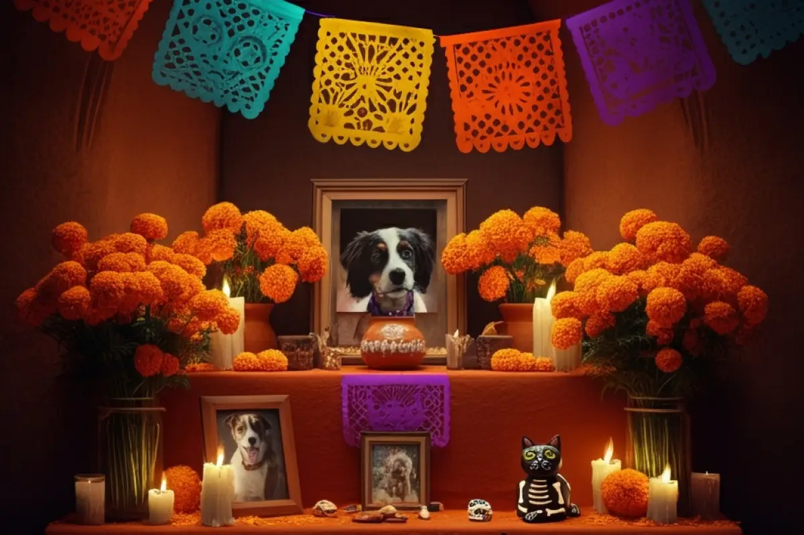

5° Festival del Día de Muertos
5ta Edicion "Huellitas al Mictlan", Bienvenidos.
La tradición cobra vida
Celebremos juntos
el Día de Muertos
Participa como catrín, catrina o presenta tu altar. Comparte tu creatividad y sé parte de una celebración llena de memoria y tradición.
Descubre cómo participar
Aparta la fecha
30
Octubre · 2026
17:00 — 19:00 h
Un recuerdo que nos acompaña
Altar digital de mascotas
Escribe el nombre de tu compañero de vida y enciende una veladora para dedicarle este pequeño altar.

En memoria de
Nuestros compañeros